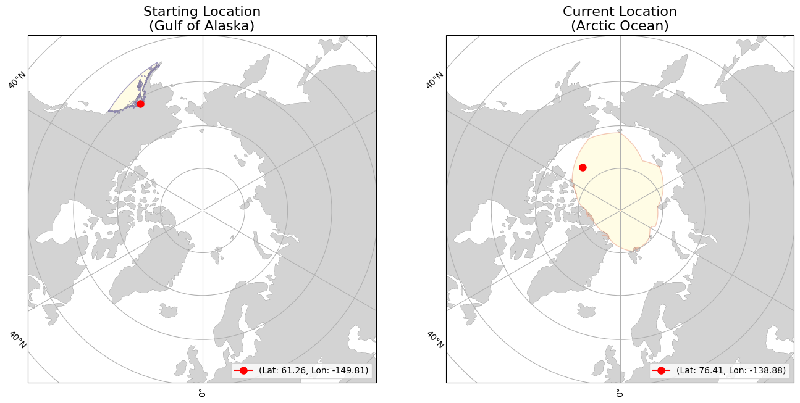
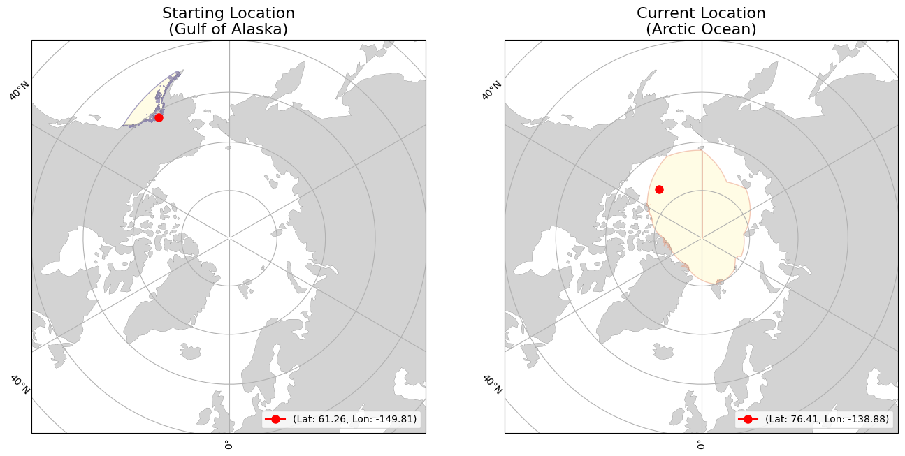

lon=-149.80502
(Gulf of Alaska)
lon=-139.55928
(Arctic Ocean)
|
|
Buoy | Movement | Temperature | |||
|---|---|---|---|---|---|---|
| ID | 300534065165780 | Initial Position | lat=61.2633 lon=-149.80502 (Gulf of Alaska) |
Average Air Temperature | avg_air_temp | |
| Type | Ice Ball 133 | Current Position | lat=76.44222 lon=-139.55928 (Arctic Ocean) |
Minimum Air Temperature | min_air_temp | |
| Start Date | 08-08-2024 | Daily Distance Mean | 10.677 | Maximum Air Temperature | max_air_temp | |
| End Date | 12-26-2024 | Daily Distance Median | 9.671 | Average Sea Surface Temperature | avg_sst | |
| Status | floating | Daily Distance Standard Deviation | 6.422 | Minimum Sea Surface Temperature | min_sst | |
| Total Distance Start to End Dates | 1505.496 | Maximum Sea Surface Temperature | max_sst | |||
 
